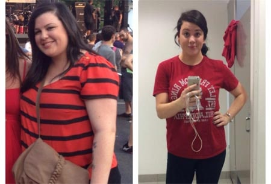
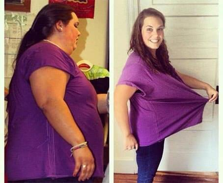
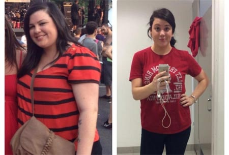
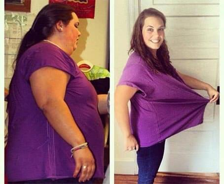

Salut là-bas! Avec vous Pierre Dupont.
Aujourd'hui, nous allons entendre une histoire surprenante dans tous les sens – comment le propriétaire de la restauration rapide a planté les visiteurs sur leur nourriture... amaigrissement!
Burgers, pizzas et autres ont mangé et perdu du poids absolument tout, y compris Jean, qui a travaillé là-bas pendant quelques années. En mangeant un repas exceptionnellement rapide, Jean a perdu plusieurs dizaines de kilos, tout comme les autres clients en surpoids. Ils mangeaient et perdaient du poids, et il y en avait beaucoup. Comme cela s'est passé, Mike lui-même a accepté de le dire uniquement à l'enregistreur. Son histoire de première main.
Publié 2021
 Scandaleux
Scandaleuxhistoire

Découvert le secret de la restauration rapide, à partir de laquelle perdre du poids
Bonjour à tous, je suis Jean et j'avais l'air comme ça avant. En trois mois de travail dans la restauration rapide, j'ai perdu du poids. Je n'ai pas couru, travaillé pendant des jours ou suivi un régime. J'ai travaillé dans ces burgers qui font perdre du poids. J'ai récemment démissionné et je veux dire aux gens la vérité sur l'ingrédient secret que notre chef a mélangé à la sauce pour que les gens perdent du poids et reviennent.
Quand il y avait peu de touristes dans notre ville, la restauration rapide n'était pas populaire. Puis les premiers points avec des beignets et des hot-dogs ont commencé à s'ouvrir. Et il s'est avéré que c'était rentable. Les touristes préfèrent la nourriture rapide et malsaine. Personne ne s'assoit sur les carottes bouillies et les choux de bruxelles, mais sur les frites – autant que vous le souhaitez. Pourquoi? Parce qu'ils sont spécialement créés à ces fins.
Hamburgers à l'ingrédient secret
Mon patron travaillait dans un restaurant dans le passé et cuisinait bien. Et j'ai aussi décidé d'ouvrir mon entreprise. Mais la concurrence était trop grande et sa nourriture n'est pas devenue aussi populaire qu'il l'avait espéré. Le patron a pris beaucoup de crédit pour son entreprise et a essayé de nombreuses façons de relancer l'entreprise. Pendant six mois, il a travaillé dans le moins, seulement alors il a renversé les gens. Il a même cessé de faire face et m'a pris comme assistant

Beaucoup de gens locaux sont obsédés par la santé – sur le sport et pour une bonne nutrition. Et soudain, nous avons commencé à venir de plus en plus de clients. Et non seulement les gros, mais aussi les gars minces et les filles de fitness sont allés. Notre point est devenu populaire: il est écrit sur les blogs sur la nourriture de rue, Ajouté aux guides et aux cartes, ce qui a attiré les touristes.

La restauration rapide de rue est devenue plus populaire que le restaurant Michelin
Pourquoi tout à coup un tel intérêt? La restauration rapide était la chose la plus commune. Frites, différents hamburgers et limonades – sans zeste particulier. Sauf la sauce signature. Sa recette était gardée secrète. Le chef cuisinait personnellement et ne faisait confiance à personne. Je suis accro au burger au fromage.
Si le matin ne l'a pas mangé, alors toute la journée n'était pas d'humeur et de force. J'avais peur qu'on mélange quelque chose d'interdit dans la sauce pour que les gens s'assoient pour manger. Les clients réguliers sont devenus de plus en plus. Les gens sont venus nous voir encore et encore parce que tout le monde... perdait du poids. C'est la vérité.

J'avais 25 kilos de poids supplémentaire. En trois mois de travail, je les ai tous abandonnés. Bien que manger presque seulement des hamburgers et des frites. Il y avait encore la force et le désir de commencer à aller à la gym. Notre client formateur régulier m'a même offert un abonnement et a développé un programme de réduction de nos hamburgers. C'était bizarre. Voyez par vous-même comment nos clients réguliers ont changé en quelques mois.
 

J'ai eu peur et j'ai emmené la sauce au laboratoire pour analyse. Et il m'a choqué! Il n'y avait rien d'interdit dans la composition. Juste un étrange ensemble d'épices à partir d'ingrédients naturels. Mais l'assaisonnement habituel ne pouvait pas donner de la force, améliorer la digestion et aider à perdre du poids. Je suis très sérieux. Regardez à quoi je ressemblais avant l'appareil dans la restauration rapide et maintenant. J'ai mangé au travail et j'ai réalisé que je devenais plus mince et que j'avais l'air beaucoup mieux. J'étais obsédé et j'ai décidé à tout prix de savoir pourquoi les gens perdaient du poids. Mais rien n'a pu trouver. Les légumes et la viande étaient importés frais de la ferme, et les petits pains étaient cuits dans une pâtisserie locale. Et il crie à me rendre fou. Le deuxième point s'est ouvert. La file d'attente au comptoir, même en semaine, s'étendait sur toute la rue, les prix augmentaient et les gens ne diminuaient pas. J'ai déjà commencé à trouver des idées folles, quand soudain la vérité m'a été révélée.

Pourquoi tout le monde perd du poids sur les hamburgers?
Quand le patron n'a pas eu d'affaires et qu'il y avait un risque de tout perdre, y compris la maison hypothéquée, il a fait un geste ingénieux. J'ai inventé une recette pour la restauration rapide, à partir de laquelle ils perdent du poids. Comment a-t-il fait ça? J'ai acheté un médicament naturel populaire , qui est bu pour la perte de poids des acteurs, des chanteurs, des politiciens, des médecins, des nutritionnistes, des modèles, etc. et a commencé à le mélanger dans la sauce. Et réduit les prix. Folie. J'ai travaillé à perte et j'ai attendu que les gens se présentent. Ils sont apparus! Ils ont commencé à acheter des hamburgers et un “miracle” s'est produit. Ils ont mangé et perdu du poids.
Comment le savais-je? J'ai accidentellement vu l'emballage, l'ai étudié de long en large, comparé à l'analyse en laboratoire de la sauce. Et tout s'est mis en place. J'ai dit au chef que je connaissais l'ingrédient et j'ai demandé une augmentation de salaire. Le patron a refusé, justifiant que personne ne me croirait et que je devrais être heureux d'être passé d'un gros bouton à un bel homme mince. Il m'est devenu une honte. Récemment, j'ai travaillé sept jours sur sept et j'ai quand même très peu.

J'ai démissionné. Et maintenant, je veux dire à tous ceux qui ont mangé des hamburgers minces. Vous avez perdu du poids au détriment de , qui a été ajouté à la sauce. Plus besoin de payer trop cher et de tuer votre estomac avec de la restauration rapide. Vous pouvez acheter vous-même. Surtout le fabricant a souvent des rabais et des cadeaux pour l'achat. a un effet secondaire – je veux manger moins. Je me souviens de mes clients bien aimés qui sont venus sur la colline, mais ne pouvaient pas le finir et presque étouffé. Parce qu'ils avaient peur que s'ils ne mangeaient pas, ils s'en remettraient. Maintenant, j'espère que tout le monde saura la vérité – vous pouvez perdre du poids en ajoutant l'ingrédient "secret" à absolument n'importe quel aliment!
Wow, voici les nouvelles.
J'ai entendu parler de ces burgers par mon frère, mais je ne le croyais pas.
Personnellement, j'ai perdu du poids sur un hamburger à la viande. Mais la vérité est très cher et pas aussi savoureux que je le voudrais. Mais maintenant je connais le secret et je vais m'acheter et je vais manger ce que je veux et me mettre dans la forme dont j'ai toujours rêvé.
Et je pense que vous êtes belle maintenant, pas besoin de perdre du poids plus.
Où acheter ? Très urgent!
Il n'y a aucune difficulté à acheter , directement auprès du fabricant, commandez tout.
Je suis l'une des premières à être accro à la restauration rapide. J'ai vraiment perdu du poids et nettoyé le corps. J'ai remarqué que l'humeur était meilleure, que je dormais bien et que je bougeais davantage. Je n'ai pas hésité et suis allé à la gym et j'ai découvert des capacités dont je ne soupçonnais pas auparavant. C'est comme ça que j'ai commencé à perdre du poids encore plus vite. puis Jean m'a dit que dans la sauce . Seulement en moins que nécessaire. Je me suis acheté cet outil et j'ai bu un cours normal. Voici mes résultats pour l'année.
un résultat chic!
aussi, vous devez essayer cet outil.
naturel et efficace. J'en suis ravie. Il m'a vraiment aidé! Non seulement j'ai perdu du poids sur 20 kilos, mais je voulais aussi faire du sport. Maintenant, j'ai une figure dont je n'avais même pas rêvé auparavant.